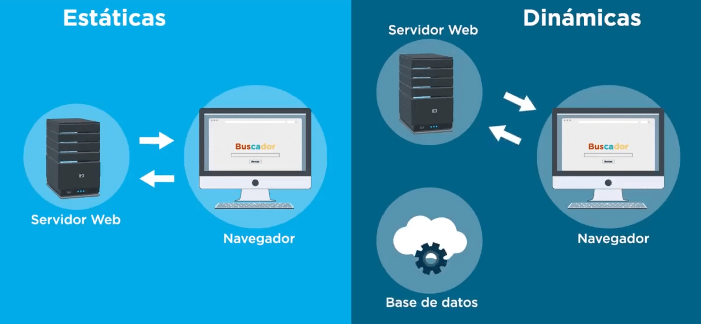

UT 1: Arquitectura Web y herramientas de programación¶
Resumen UT¶
Duración y criterios de evaluación
Duración estimada: 4 sesiones
Resultado de aprendizaje:
- Selecciona las arquitecturas y tecnologías de programación Web en entorno servidor, analizando sus capacidades y características propias.
Criterios de evaluación:
- Se han caracterizado y diferenciado los modelos de ejecución de código en el servidor y en el cliente Web.
- Se han reconocido las ventajas que proporciona la generación dinámica de páginas Web y sus diferencias con la inclusión de sentencias de guiones en el interior de las páginas Web.
- Se han identificado los mecanismos de ejecución de código en los servidores Web.
- Se han reconocido las funcionalidades que aportan los servidores de aplicaciones y su integración con los servidores Web.
- Se han identificado y caracterizado los principales lenguajes y tecnologías relacionados con la programación Web en entorno servidor.
- Se han verificado los mecanismos de integración de los lenguajes de marcas con los lenguajes de programación en entorno servidor.
- Se han reconocido y evaluado las herramientas de programación en entorno servidor.
Las arquitecturas web definen la forma en que las páginas de un sitio web están estructuradas y enlazadas entre sí. Las aplicaciones web se basan en en modelo cliente-servidor.
1.1 Modelo Cliente/servidor¶

Hoy en día, es frecuente que uno o varios cliente acceden a un servidor. La nuevas arquitecturas sustituyen el servidor por un balanceador de carga de manera que N servidores dan respuesta a M clientes. En las aplicaciones web, el cliente es el navegador web. El cliente hace la petición (request normalmente mediante el protocolo GET mediante el puerto 80/443) y el servidor responde (response).
Página web dinámica¶
Si la página web únicamente contiene HTML + CSS se considera una página estática. Para generar una página dinámica, donde el contenido cambia, a día de hoy tenemos dos alternativas:
- Utilizar un lenguaje de servidor que genere el contenido, ya sea mediante el acceso a una BD o servicios externos.
- Utilizar servicios REST de terceros invocados desde JS.

Las tecnologías empleadadas (y los perfiles de desarrollo asociados) para la generación de páginas dinámicas son:
| Perfil | Herramienta | Tecnología |
|---|---|---|
| Front-end / cliente | Navegador Web | HTML + CSS + JavaScript |
| Back-end / servidor | Servidor Web + BBDD | PHP, Python, Ruby, Java / JSP, .Net / .asp |
Single Page Application (SPA)¶
A día de hoy, gran parte del desarrollo web está transicionando de una arquitectura web cliente-servidor clásica donde el cliente realiza una llamada al backend, por una arquitectura SPA donde el cliente gana mucho mayor peso y sigue una programación reactiva que accede a servicios remotos REST que realizan las operaciones (comunicandose mediante JSON).

1.2 Arquitectura de 3 capas¶
Hay que distinguir entre capas físicas (tier) y capas lógicas (layer).
Tier¶
Capa física de una arquitectura. Supone un nuevo elemento hardware separado físicamente. Las capas físicas más alejadas del cliente están más protegidas, tanto por firewalls como por VPN.
Ejemplo de arquitectura en tres capas físicas (3 tier):
- Servidor Web
- Servidor de Aplicaciones
- Servidor de base de datos
Cluster en tiers
No confundir las capas con la cantidad de servidores. Actualmente se trabaja con arquitecturas con múltiples servidores en una misma capa física mediante un cluster, para ofrecer tolerancia a errores y escalabilidad horizontal.
Layer¶
En cambio, las capas lógicas (layers) organizan el código respecto a su funcionalidad:
- Presentación. Es la capa donde la aplicación se muestra al usuario. Básicamente es la GUI (Graphical User Interface, Interfaz Gráfica de Usuario). En el caso de una aplicación web sería el código HTML que se carga directamente en el navegador web. En cualquier caso, se ejecuta directamente en el equipo del cliente.
- Negocio / Aplicación / Proceso. Es la capa intermedia donde se lleva a cabo toda la lógica de la aplicación. Siempre se ejecutará en el lado servidor. Esta capa, tras realizar todos los cálculos y/o operaciones sobre los datos, genera el código HTML que será presentado al usuario en la capa siguiente.
- Datos / Persistencia. Es la capa que almacena los datos. Básicamente, en condiciones normales, hace referencia al propio SGBD que es el encargado de almacenar los datos. Dependiendo de la arquitectura de la aplicación, esta capa y la de negocio se pueden encontrar fisicamente en el mismo equipo, aunque también es posible que se tengan que separar por cuestiones de rendimiento. La capa de datos sirve todas la información necesaria a la capa de negocio para llevar a cabo sus operaciones.
Como se observa, cada una de las capas se puede implementar con diferentes lenguajes de programación y/o herramientas.

1.3 MVC¶

Model-View-Controller o Modelo-Vista-Controlador es un modelo de arquitectura que separa los datos y la lógica de negocio respecto a la interfaz de usuario y el componente encargado de gestionar los eventos y las comunicaciones.
Al separar los componentes en elementos conceptuales permite reutilizar el código y mejorar su organización y mantenimiento. Sus elementos son:
- Modelo: representa la información y gestiona todos los accesos a ésta, tanto consultas como actualizaciones provenientes, normalmente, de una base de datos. Se accede via el controlador.
- Controlador: Responde a las acciones del usuario, y realiza peticiones al modelo para solicitar información. Tras recibir la respuesta del modelo, le envía los datos a la vista.
- Vista: Presenta al usuario de forma visual el modelo y los datos preparados por el controlador. El usuario interactura con la vista y realiza nuevas peticiones al controlador.
Lo estudiaremos en más detalle al profundizar en el uso de los frameworks PHP.
1.4 Decisiones de diseño¶
A la hora de desarrollar cualquier proyecto web debemos realizarnos una serie de preguntas como son:
- ¿Qué tamaño tiene el proyecto?
- ¿Qué lenguajes de programación conozco? ¿Vale la pena el esfuerzo de aprender uno nuevo?
- ¿Voy a usar herramientas de código abierto o herramientas propietarias? ¿Cuál es el coste de utilizar soluciones comerciales?
- ¿Voy a programar la aplicación yo solo o formaré parte de un grupo de programadores?
- ¿Cuento con algún servidor web o gestor de base de datos disponible o puedo decidir libremente utilizar el que crea necesario?
- ¿Qué tipo de licencia voy a aplicar a la aplicación que desarrolle?
Una vez que las hemos respondido, estaremos listo para comenzar con él.
1.5 Herramientas¶
Servidor Web¶
Un servidor web es un software que forma parte del servidor y tiene como misión principal devolver información ((HTML, CSS, JS, JSON, imágenes, etc...)) cuando recibe peticiones HTTP (GET, POST, DELETE, ...) por parte de los usuarios.
El producto más implantando es Apache Web Server, creado en 1995.
- Software libre y multiplataforma
- Sistema de módulos dinámicos → PHP, Python, Perl
- Utiliza el archivo
.htaccesspara su configuración
En la actualidad, Apache está perdiendo mercado respecto a Nginx. Se trata de un producto más moderno (2004) y que en determinados escenarios tiene mejor rendimiento que Apache.
Para saber más...
Servidor de Aplicaciones¶
- Software que ofrece servicios adicionales a los de un servidor web:
- Clustering
- Balanceo de carga
- Tolerancia a fallos
- Tomcat es el servidor de aplicaciones open source y multiplataforma de referencia para una arquitectura Java.
- Contiende un contenedor Web Java que interpreta Servlets y JSP.
Info
Tanto los servidores web como los servidores de aplicaciones los estudiaremos en profundidad en el módulo de "Despliegue de Aplicaciones Web".
Lenguajes en el servidor¶
Las aplicaciones que generan las páginas web se programan en alguno de los siguientes lenguajes:
- PHP
- JavaEE: Servlets / JSP
- Python
- ASP.NET → Visual Basic .NET / C#
- Ruby
- ...
JavaEE¶
Java Enterprise Edition es la solución Java para el desarrollo de aplicaciones empresariales. Ofrece una arquitectura muy completa y compleja, escalable y tolerante a fallos. Planteada para aplicaciones para grandes sistemas.

PHP¶
- Lenguaje de propósito general diseñado para el desarrollo de páginas web dinámicas
- En un principio, lenguaje no tipado.
- Actualmente en la versión 8.X . Se recomienda al menos utilizar una versión superior a la 7.0.
- Código embebido en el HTML
- Instrucciones entre etiquetas
<?phpy?>- Para generar codigo dentro de PHP, podemos usar la instrucción
echo
- Para generar codigo dentro de PHP, podemos usar la instrucción
- Multitud de librerías y frameworks:
- Laravel, Symfony, Codeigniter, Zend
Su documentación es bastante completa
El siguiente mapa mental muestra un resumen de sus elementos:

Durante las siguientes unidades vamos a estudiar PHP en profundidad.
1.6 Puesta en marcha¶
Para poder trabajar con un entorno de desarrollo local, hemos de preparar nuestro entorno de desarrollo con las herramientas comentadas. A lo largo del curso vamos a utilizar la versión 8.X de PHP.
XAMPP¶
XAMPP (https://www.apachefriends.org/es/index.html) es una distribución compuesta con el software necesario para desarrollar en entorno servidor. Se compone de las siguientes herramientas en base a sus siglas:
- X para el sistema operativo (de ahí que se conozca tamnbién como LAMP o WAMP o MAMP).
- A para Apache.
- M para MySQL / MariaDB. También incluye phpMyAdmin para la administración de la base de datos desde un interfaz web.
- P para PHP.
- la última P para Perl.
Desde la propia página se puede descargar el archivo ejecutable para el sistema operativo de nuestro ordenador. Se recomienda leer la FAQ de cada sistema operativo con instrucciones para su puesta en marcha.
XAMPP en Windows
Si vas a trabajar con tu propio ordenador, XAMPP es una solución más sencilla que Docker, sobre todo si trabajar con Windows como sistema operativo.
Docker¶
Docker es un gestor de contenedores, considerando un contenedor como un método de virtualización del sistema operativo.
El uso de contenedores requiere menos recursos que una máquina virtual, por lo tanto, su lanzamiento y detención son más rápidos que las máquinas virtuales.
Así pues, Docker permite crear, probar e implementar aplicaciones rápidamente, a partir de una serie de plantillas que se conocen como imágenes de Docker.
Para ello es necesario tener instalado Docker Desktop en nuestros entornos de desarrollo (el cual ya incluye en nucleo de Docker y la herramienta docker compose).
Versiones
A lo largo del curso vamos a usar PHP 8.X. Respecto a Docker, para escribir los apuntes hemos utilizado la version 24 y la version 2.23.2 de docker compose. Finalmente, la versión de Docker Desktop que hemos utilizado es la 4.25.2.
Plantilla Servidor Web + PHP¶
Docker se basa en el uso de imágenes para crear contenedores. Docker Compose simplifica el trabajo con múltiples contenedores, y por ello, para facilitar el arraque, nos centraremos en Docker Compose utilizando una plantilla que únicamente va a contener como servicios Apache/Nginx y PHP.
Para ello, vamos a rellenar el archivo docker-compose.yaml con:
# Services
services:
# Apache + PHP
apache_php:
image: php:8-apache
# Preparamos un volumen para almacenar nuestro código
volumes:
- ./src/:/var/www/html
expose:
- 80
ports:
- 80:80
# Services
services:
nginx:
image: nginx:1.19
ports:
- 80:80
volumes:
- ./src:/var/www/php
- ./.docker/nginx/conf.d:/etc/nginx/conf.d # cargamos la configuración de un fichero externo
depends_on:
- php # enlazamos nginx con php
php:
image: php:8.0-fpm
working_dir: /var/www/php
volumes:
- ./src:/var/www/php
Dentro de la carpeta que contenga dicho archivo, hemos de crear una carpeta src donde colocaremos nuestro código fuente. Para facilitar la puesta en marcha, tenéis la plantilla de Apache/PHP (versión 2 con a2enmod rewrite) o Nginx/PHP disponible para su descarga.
Cuando estemos listos, lanzaremos el servicio mediante:
docker-compose up -d
Si queremos ver el contenido de los archivos de log del servicio utilizaremos:
docker-compose logs -f
Para copiar un archivo desde nuestro sistema al interior del contenedor:
docker cp ./miFichero idContenedor:/tmp
Y al revés, si queremos consultar un archivo contenido dentro de un contenedor, lo copiaremos a nuestro sistema:
docker cp idContenedor:/tmp/archivoAConsultar.txt ./
Finalmente, si queremos acceder a un terminal interactivo dentro del contenedor:
docker exec -it nombreContenedor bash
Otros comandos que podemos llegar a utilizar son:
docker ps: Ver los contenedores que se estan ejecutandodocker ps -a: Ver todos los contenedoresdocker start nombreContenedor: Arrancar un contenedordocker images: Ver las imágenes que tenemos descargadas
Otra forma más sencilla para lanzar de nuevo los contenedores y gestionarlos una vez creados es utilizar el interfaz gráfico que ofrece Docker Desktop.
Docker stack
Existen diversas opciones mediante Docker que ofrecen soluciones completas y empaquetas para todo el stack de desarrollo. En posteriores sesiones utilizaremos tanto Devilbox como Laradock
Pero quiero saber cómo funciona...
En el módulo de Despliegue de Aplicaciones Web estudiaréis en profundidad, además de Docker, Apache y otros servicios que nos servirán de ayuda para el desarrollo en entorno servidor.
Entorno de desarrollo¶
En este curso vamos a emplear Visual Studio Code como entorno de desarrollo (IDE). Existen otras alternativas, siendo PhpStorm la más conocida pero siendo de pago. Otra posibilidad es utilizar Eclipse, aunque es un entorno bastante pesado.
VSCode es un editor de código fuente que se complementa mediante extensiones. Para facilitar el trabajo a lo largo del curso vamos a utilizar las siguientes extensiones:
En la siguiente sesión comenzaremos a utilizar Intelephense pero en esta sesión nos vamos a centrar en Docker (más adelante instalaremos nuevas extensiones).
Por ejemplo, si abrimos la extensión de Docker, podréis visualizar tanto los contenedores como las imágenes de vuestro sistema. Desde cada contenedor, mediante clic derecho, podemos iniciar/detener/reiniciar cada contenedor, así como ver su contenido o abrir un terminal dentro del mismo.

Hola Mundo¶
Y como no, nuestro primer ejemplo será un Hola Mundo en PHP.
Si nombramos el archivo como index.php, al acceder a http://localhost automáticamente cargará el resultado:
<!DOCTYPE html>
<html lang="es">
<head>
<meta charset="UTF-8">
<meta name="viewport" content="width=device-width, initial-scale=1.0">
<title>Hola Mundo</title>
</head>
<body>
<?php
echo "Hola Mundo";
?>
</body>
</html>
1.7 Referencias¶
- Curso de introducción a Docker, por Sergi García Barea : https://sergarb1.github.io/CursoIntroduccionADocker/
- Artículo Arquitecturas Web y su evolución